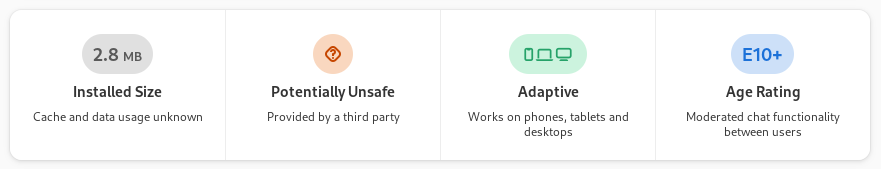

Software Metadata
Screenshots
Software displays the screenshots on the details page for an application. This typically should include screenshots of various windows / dialogs of the application, so the user would get a quick grasp of the application’s features, look and feel etc.
When more than one screenshot is present in the application’s metainfo file, Software will show the screenshots in a carousel.
In cases when the application’s metainfo file doesn’t contain any screenshot, then a placeholder icon as below with No Screenshots will be displayed:
Placeholder icon might look different if you're using a custom icon theme.
Screenshots might become outdated as the application’s UI changes. So, even if Software shows screenshots for an app, it’s important to check if these screenshots are up-to-date or outdated.
You can improve app screenshot information:
App context bar
The app context bar in Software is a collection of tiles on the details page for an application, which display the following details.
This shows the app context bar for the Software app:

The tiles are displayed in the order listed above (starting with Storage tile on the left).
Each tile is covered in detail below.
Storage
Software displays a storage tile on the details page for an application. If the application is not installed, this displays the estimated download size needed to install it. If the application is installed, it displays the storage space used by the application.
The sizes are calculated from data provided by the Software backend (such as flatpak or an RPM), and are not specified in the metadata provided by the application. There is nothing you can do to affect this tile by editing an application’s metainfo file. It’s listed here for completeness.
Safety
Software displays a safety tile on the details page for an application. This summarizes information about whether the app can be considered safe to install and run, or whether caution may be required before trusting it.
This tile combines information about the permissions which the app requests when it runs (such as permission to read your files), with information about how the app was developed. Free software applications, where the source code is publicly readable, can be more secure than proprietary ones, as they can be audited.
The dialog which appears when the tile is clicked lists the different permissions the app requests, plus some information about its license and runtime.
You can improve the safety information:
Hardware support
Software displays a hardware support tile on the details page for an application. This combines information about the hardware requirements of the application, and the hardware capabilities of the computer, with the aim of highlighting incompatibilities or missing requirements — or to indicate that the application should work correctly with no incompatibilities.
The code looks at the following hardware. More may be supported in future.
Whether a touchpad, mouse or keyboard is present/needed
Whether a gamepad is needed
The minimum and recommended display size that the app can scale to
It’s not possible to reliably detect whether a gamepad is present, as they are often left disconnected due to not being needed for normal computer use.
The dialog which appears when the tile is clicked lists the different hardware requirements of the app, and whether any of them are not met.
You can improve the hardware information:
Age rating
Software displays an age rating tile on the details page for an application. This shows what age range the application should be suitable for, based on different kinds of content which the application has declared it contains. This information is summarized in a format similar to the game or film rating certificates for your country.
For example, this will highlight whether a game contains violence, or whether an application contains in-app advertising.
The dialog which appears when the tile is clicked lists the different types of content in the application and how severe that content is.
You can improve the age rating information:
License
Software displays a tile indicating whether an application is free software or whether its license is proprietary, special or unknown. This tile includes more detailed information about the project’s license. This tile also lists some of the benefits of free software. Learn more
Sometimes the license information isn’t correct for an application, and hence an application which is actually free software will be shown as ‘proprietary’. Similarly, sometimes the license information is unknown.
Software highlights free and open-source licenses in green, proprietary and special licenses in yellow as shown here. Unknown licenses are highlighted in grey.
You can add or improve the license information:
Links
Software displays a list of application resource links in the link tile. They are as follows:
Website link |
|
Donation link |
|
Translation contribution link |
|
Bug reporting link |
|
Help link |
|
Contact link |
Some or all of these links may be present depending on whether they are listed in the application’s metainfo file.
In cases when the application’s metainfo file doesn’t contain any link, the following tile with a question mark will be displayed.
You can improve the links:
Carousel tile
Applications which are featured by Software are displayed in a carousel at the top of the main window as shown here. Each carousel tile has a background color which is automatically extracted from the application’s icon. Sometimes this background color is not quite right for the application and needs to be specified explicitly by the application developer.
The set of applications which are featured is decided by the Linux distribution maintainers.
You can improve the carousel tile:
Where metadata comes from
The metadata used to specify what hardware a piece of software requires, what ages of user it is suitable for, and factors which contribute to how safe it might be to install, all come from the metainfo file for that software.
The metainfo file is an XML file. Its file format is specified in the AppStream specification.
See the metainfo file for GNOME Files app.
appdata is the older term for metainfo.
What happens if metadata is missing
If some metadata is missing for an application, Software can only guess what it might be, and hence can’t present much information in its interfaces. The guesses Software makes are based on the fact that most software is designed for desktop computers.
You can help improve the metadata for an application!
How to contribute missing information
If you find that an app’s page is missing information or has incorrect information, you can contribute in one of the two ways:
You can report the missing / incorrect metadata to the respective app’s bug tracker, so the app developer can fix it.
You can fix the missing / incorrect metadata yourself. See the How to guide below on how to do that.
For both, you first need to find the app’s project page. The link to the project page should typically be available in the app’s page as shown here. If not, you will need to find it with a simple search on Google.
Apps are typically hosted in Gitlab or Github. For example, GNOME apps are hosted in gitlab.gnome.org.
How to add missing app screenshots
The screenshot information for an application is stored in the <screenshots> element within the application’s <component> in its metainfo file.
Recommended number of screenshots for an app is between 5 to 10. Screenshots should ideally be in the PNG format with 16:9 aspect ratio and minimum width of 620 pixels.
For example, here are the screenshot entries for the Software app:
<screenshots>
<screenshot type="default">
<image>https://gitlab.gnome.org/GNOME/gnome-software/raw/HEAD/data/metainfo/ss-overview.png</image>
<caption>Overview panel</caption>
</screenshot>
<screenshot>
<image>https://gitlab.gnome.org/GNOME/gnome-software/raw/HEAD/data/metainfo/ss-details.png</image>
<caption>Details panel</caption>
</screenshot>
</screenshots>How to fix incorrect safety and permissions information
The safety and permissions information for an application comes from different sources depending on how the application is packaged. For traditionally packaged applications, for example in RPM or DEB format, there is no safety or permissions information available and nothing can be done to add it to an application.
For flatpak applications, the information comes from the application’s flatpak manifest, specifying what holes in the sandbox the application requires. Each of these holes typically contributes to lowering the displayed safety level of the application in Software — moving it from ‘safe’ to ‘potentially unsafe’ to ‘unsafe’.
In order to improve the safety level of an application, its sandboxing must be made as tight as possible, by removing sandbox permissions where they’re not needed, and using portals instead of sandbox permissions where possible. Use of portals does not lower the displayed safety level of an application in Software.
For example, if the application requests read/write access to the full file system (--filesystem=host), does it actually need that, or does it only need to access files in a few specific locations? If so, the file portal could be used, or more specific file system permissions could be specified.
If the application works on Wayland, and only needs to work on X11 as a fallback, without using special X11 features, could it use --socket=fallback-x11 rather than --socket=x11?
Guidance about specific permissions, or other packaging formats, may be added here in future.
Further reading:
How to add missing hardware information
The hardware information for an application is stored in the <requires>, <recommends> and <supports> elements within the application’s <component> in its metainfo file.
Software understands the <control> and <display_length> elements.
See this blog post or this blog post for examples of metadata.
How to add missing content rating information
The content rating information for an application is stored in the <content_rating> element within the application’s <component> in its metainfo file.
Applications should use the OARS 1.1 standard to fill in this element. If the <content_rating> element is not specified, the application’s content rating is unknown. If it’s specified but empty, the application has no content which might be unsuitable for any audience.
Use the OARS generator to produce suitable content rating information for an application.
How to fix incorrect licensing information
The licensing information for an application is stored in the <project_license> element within the application’s <component> in its metainfo file.
The content in this element should be an SPDX expression which describes the ‘main’ license for the project. This should typically be the license of the code, and not include the license of the documentation or ancillary content.
If the SPDX expression is a single license, or an ‘or’ combination of multiple licenses, which are all FSF or OSI approved, the application is considered ‘free software’ and the license tile says so. Otherwise, it’s considered ‘proprietary’.
If an application is being displayed as ‘proprietary’ when you think it shouldn’t be, it’s likely that the <project_license> element includes the documentation license for the project. Remove it.
For example, change the license metadata from:
<project_license>GPL-2.0+ and CC-BY-SA-3.0</project_license>to
<project_license>GPL-2.0+</project_license>Further reading:
How to add missing links
The links for an application are stored as <url> elements within the application’s <component> in its metainfo file.
Add as many of the link types documented in the appstream specification as are available for the application. If no suitable page exists for a given link type, it doesn’t have to be included.
For example, here are the resource links for the Software app:
<url type="bugtracker">https://gitlab.gnome.org/GNOME/gnome-software/-/issues</url>
<url type="contact">https://discourse.gnome.org/tag/gnome-software</url>
<url type="contribute">https://welcome.gnome.org/app/Software/</url>
<url type="donation">https://www.gnome.org/donate/</url>
<url type="homepage">https://apps.gnome.org/Software</url>
<url type="translate">https://l10n.gnome.org/module/gnome-software/</url>
<url type="vcs-browser">https://gitlab.gnome.org/GNOME/gnome-software/</url>How to set the carousel tile background color
The carousel tile background color is normally extracted automatically from the application’s icon. If that color is unsatisfactory, however, it can be overridden by using the appstream’s <branding/> element with declared colors (since 47.x series). The advantage is that more clients can use the colors.
For example, here are some branding entries:
<branding>
<color type="primary" scheme_preference="light">#ff00ff</color>
<color type="primary" scheme_preference="dark">#993d3d</color>
</branding>Note the scheme_preference attribute is ignored, Software chooses the better color for the theme on its own.
There is left, for backward compatibility, the possibility to add the following XML to the application’s metainfo <component> element:
<custom>
<value key="GnomeSoftware::key-colors">[(124, 53, 77), (99, 16, 0)]</value>
</custom>but the <branding/> element has a precedence.
The value of GnomeSoftware::key-colors is a text-format GVariant with type a(yyy), and represents an unordered set of key colors for the application. Each element of the set is a color in RGB form ranging from (0, 0, 0) to (255, 255, 255).
Colors should be chosen so that they:
Are identifiable to the application, matching the application’s branding in some way, if possible.
Contrast with the edge of the application’s icon, so that when they are used as a background behind it, the icon can be distinguished.
Contrast with the foreground text color in the Adwaita theme (#2e3436) and in its dark variant (#eeeeec). This generally means choosing a color with a medium level of brightness.
Contrast can be checked using the Contrast app.
At least one color should be specified. More can be specified if one color can’t satisfy all the requirements above, and Software will choose the most appropriate to use in the carousel tile. If exactly one color is specified, its brightness and saturation may be modified to improve contrast with the foreground color. If more than one color is specified, the one with the best contrast with the foreground color will be chosen, and its brightness and saturation will not be modified.
How to test carousel tile background color changes
Modify the metainfo file for your application, and then run Software with:
gnome-software --show-metainfo=/path/to/app.metainfo.xml,icon=/path/to/app/icon.png
The details page for your application will be shown. If you navigate back to the overview page of Software, your application will be the only one shown in the carousel tile.